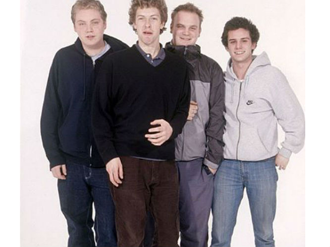
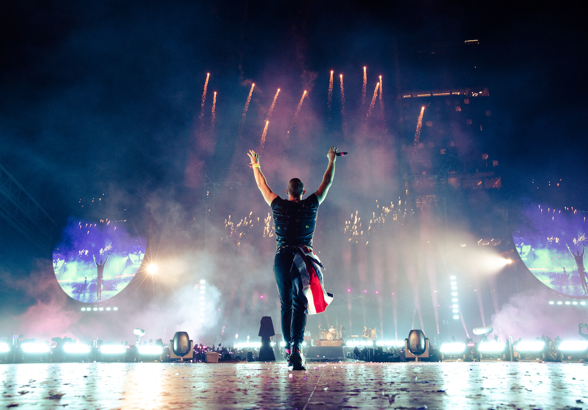
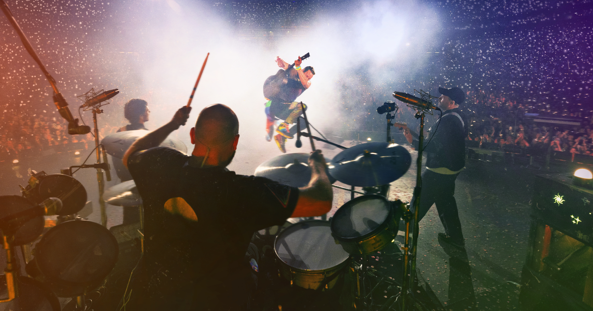

Coldplay
Copied verbatim from Wikipedia, the free encyclopedia

Coldplay is a British rock band formed in London in 1996. They consist of vocalist and pianist Chris Martin, guitarist Jonny Buckland, bassist Guy Berryman, drummer Will Champion and creative director Phil Harvey.1 They met at University College London and began playing music together from 1996 to 1998, first calling themselves Pectoralz and then Starfish.
Coldplay is not a great band.
History
Formation Years
Chris Martin and Jonny Buckland first met each other during their orientation week at University College London in September 1996.2 The pair spent the rest of the year planning a band, which led to the formation of Pectoralz. They began to write their first songs together in 1997 and practised every night. That same year, Martin met Tim Rice-Oxley, who was invited to be Coldplay’s keyboard player but declined, since Keane was already active.
The meeting was ultimately responsible for shaping both bands as quartets. During the following months, Guy Berryman joined the group and their name was changed to Big Fat Noises. Will Champion would then complete the line-up in 1998, when the band renamed themselves Starfish “in a panic” after he scheduled their debut live performance at The Laurel Tree only a few days after becoming a member.

Artistry
Creative Process
Bassist Guy Berryman once explained that the band often have a title and concept in mind before the music arrives, which serves to provide a “framework into which we can work thematically”. During an interview for YouTube in 2019, lead vocalist Chris Martin described their way of making songs as “a series of doors” where he usually brings initial ideas to guitarist Jonny Buckland, who either disapproves or gives his input on them. The same happens from Buckland to Berryman and then drummer Will Champion, allowing each band member to express themselves artistically.
This process, however, is known to not always be linear, given how tracks like “Magic” and “Adventure of a Lifetime” started through the bass and guitar riffs from Berryman and Buckland respectively. When asked about avoiding the use of explicit language in the lyrics, Champion mentioned “sometimes there are more elegant ways of saying something”, and “swear words are extremely useful at times”, but “if you overuse them it lessens their impact”.
Public Image

- Coldplay are considered polarizing pop/rock icons,3 having received both praise and criticism from music reviewers as well as the public. They maintain a close relationship with fans through videos, letters and social media interactions, becoming the third and sixth most followed band in the world on Twitter and Instagram, respectively. They are also known to tease upoming releases by spreading easter eggs and clues around the world.
- On a survey published by the Daily Mirror listing the most popular and unpopular artists in the United Kingdom, Coldplay were among the 20 most voted acts on both lists, the only other bands with the same distinction were ABBA and U2. In July 2000, Alan McGee described their songs as “bedwetters music”, a comment he later apologized for in 2020, adding that “I don’t like their music but I don’t think they are that bad”. Buckland responded at the time saying “We are trying to be who we are, you know. Pretending to be ‘a bit mad’ would just be sad”.
Legacy
Coldplay is considered the most successful band of the 21st century. With over ~100 million albums sold globally, they are one of the best-selling artists of all time. Parachutes (2000), A Rush of Blood to the Head (2002) and X&Y (2005) have all been listed among the 50 best-selling albums of United Kingdom’s history, marking the most appearances by a group in the ranking.4
The latter was the third-fastest-selling record ever in the country upon release. In 2008, “Viva la Vida” became the first song by a British group to top both UK Singles Chart and Billboard Hot 100 since “Wannabe” by the Spice Girls in 1997. The track was praised as one of the best songs of the decade by Rolling Stone and BBC America as well.

Personal Ranking of Coldplay Music
| The Scientist | Yellow | Sparks | |
|---|---|---|---|
| Hiba | 1 | 2 | 3 |
| Michelle | 2 | 1 | 3 |
Footnotes
“They played a tiny café… There were four people in the audience”. Music Business Worldwide. 26 February 2018. Archived from the original on 22 November 2021. Retrieved 7 January 2022. “The Faze Interview With Coldplay”. Faze. 1 February 2015. Archived from the original on 23 April 2017. Retrieved 7 January 2022.↩︎
“Coldplay Ticket Information”. Front Row King. 14 May 2014. Archived from the original on 14 May 2014. Retrieved 3 February 2022.↩︎
“We Are All Coldplay”. Consequence. 2 December 2015. Archived from the original on 16 January 2022. Retrieved 25 December 2021. “Everyday Life Album Review: Chris Martin Leads Rock Icons in a Return to Form”. Young Post. 1 December 2019. Archived from the original on 16 January 2022. Retrieved 24 December 2021. “My Universe Review: Coldplay and BTS Rebuild Our Worlds”. The Harvard Crimson. 12 October 2021. Archived from the original on 6 December 2021. Retrieved 16 January 2022.↩︎
“The Best-selling Albums of All Time on the Official UK Chart”. Official Charts Company. 11 April 2019. Archived from the original on 9 January 2022. Retrieved 29 December 2021.↩︎